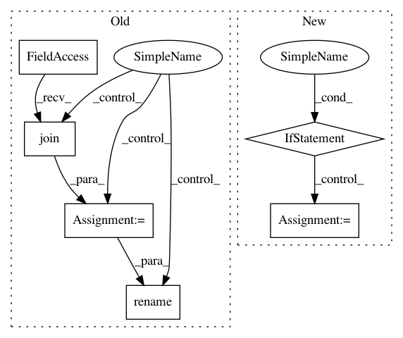

f90efe38fb0b1019e5bdc06b8a325aefe44893ea,face_alignment/detection/sfd/sfd_detector.py,SFDDetector,__init__,#SFDDetector#Any#Any#Any#,18
Before Change
if not os.path.isfile(path_to_detector):
print("Downloading the face detection CNN. Please wait...")
path_to_temp_detector = os.path.join(
base_path, "s3fd_convert.pth.download")
if os.path.isfile(path_to_temp_detector):
os.remove(os.path.join(path_to_temp_detector))
request_file.urlretrieve(
"https://www.adrianbulat.com/downloads/python-fan/s3fd_convert.pth",
os.path.join(path_to_temp_detector))
os.rename(os.path.join(path_to_temp_detector), os.path.join(path_to_detector))
self.face_detector = s3fd()
self.face_detector.load_state_dict(torch.load(path_to_detector))
After Change
super(SFDDetector, self).__init__(device, verbose)
// Initialise the face detector
if path_to_detector is None:
model_weights = load_url(models_urls["s3fd"])
else:
model_weights = torch.load(path_to_detector)
self.face_detector = s3fd()
self.face_detector.load_state_dict(model_weights)
self.face_detector.to(device)
self.face_detector.eval()
In pattern: SUPERPATTERN
Frequency: 3
Non-data size: 6
Instances
Project Name: 1adrianb/face-alignment
Commit Name: f90efe38fb0b1019e5bdc06b8a325aefe44893ea
Time: 2018-12-19
Author: bulat.adrian@gmail.com
File Name: face_alignment/detection/sfd/sfd_detector.py
Class Name: SFDDetector
Method Name: __init__
Project Name: jsalt18-sentence-repl/jiant
Commit Name: c62bac97464c078def6da7adaf8182b6ee7af331
Time: 2019-06-17
Author: yp913@nyu.edu
File Name: main.py
Class Name:
Method Name: main
Project Name: 1adrianb/face-alignment
Commit Name: 4b1a4f9e0be8bc88ad627475e12381798d97470d
Time: 2020-12-13
Author: adrian@adrianbulat.com
File Name: face_alignment/detection/dlib/dlib_detector.py
Class Name: DlibDetector
Method Name: __init__